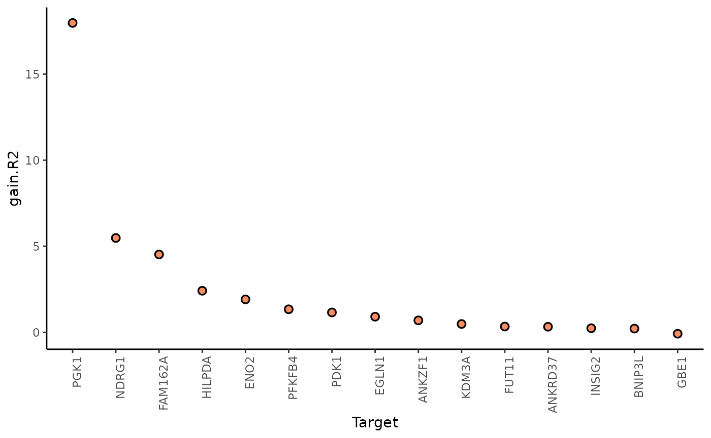
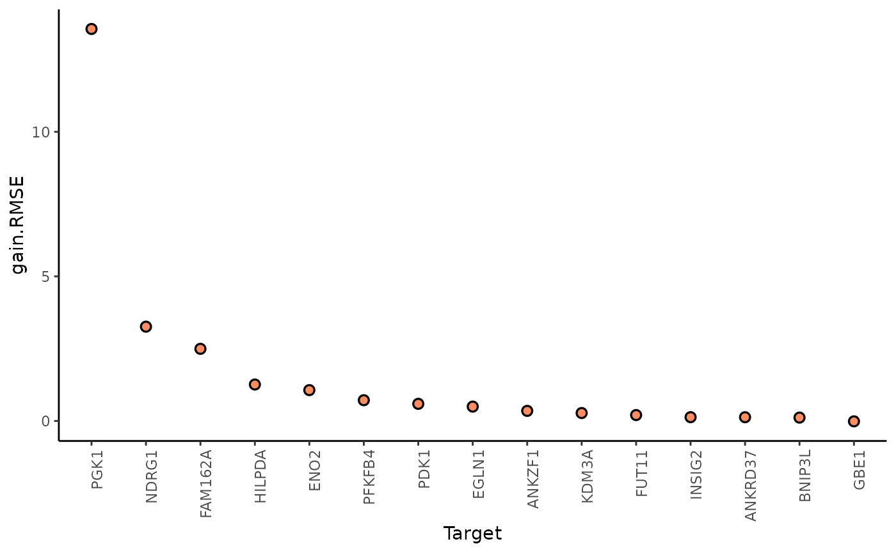
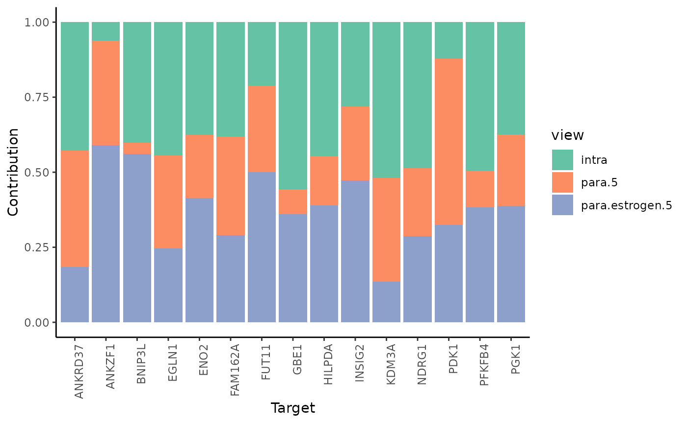
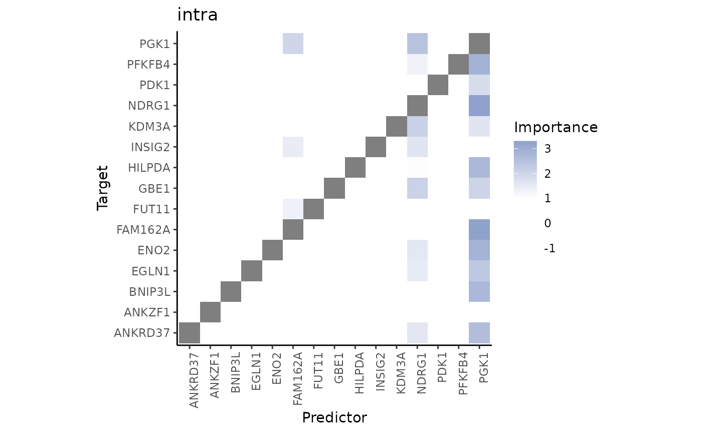
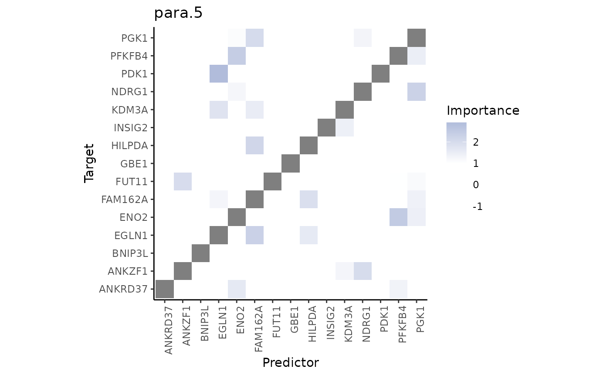
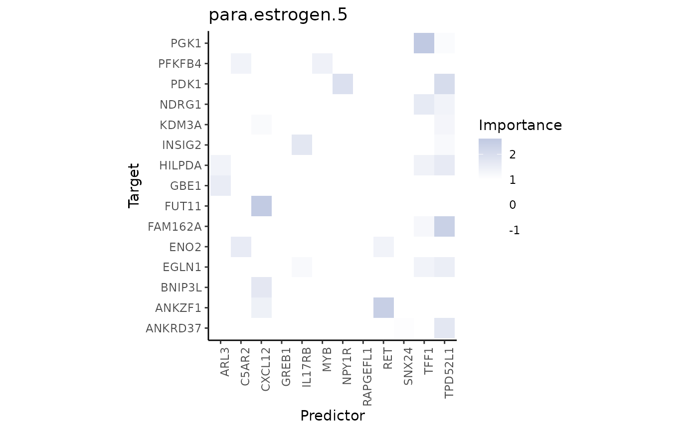
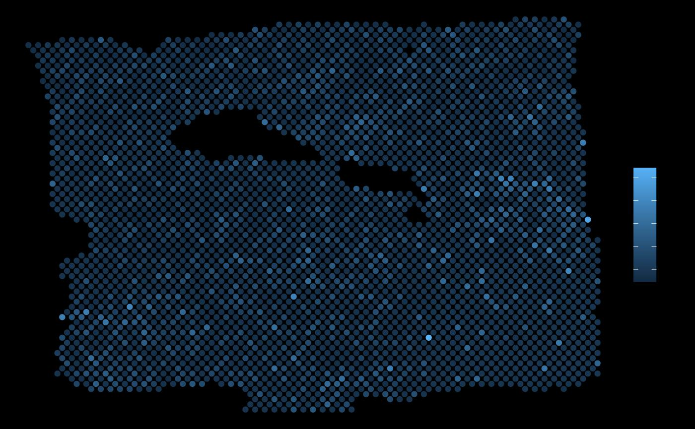

mistyR and data formats
Ricardo Omar Ramirez Flores
Heidelberg University and Heidelberg University Hospital, Heidelberg, GermanyJovan Tanevski
Heidelberg University and Heidelberg University Hospital, Heidelberg, GermanyJožef Stefan Institute, Ljubljana, Slovenia
jovan.tanevski@uni-heidelberg.de
2023-12-22
Source:vignettes/mistyDataFormats.Rmd
mistyDataFormats.RmdIntroduction
mistyR can be used to analyze spatial omics data sets stored in SpatialExperiment, SeuratObject or anndata object with just a couple of functions. In this vignette we demonstrate how to build a user friendly workflow starting from data preprocessing, through running mistyR, to analysis of results, focusing on functional representation of 10x Visium data.
First load packages needed for the analysis.
# MISTy
library(mistyR)
library(future)
# data manipulation
library(Matrix)
library(tibble)
library(dplyr)
library(purrr)
# normalization
library(sctransform)
# resource
library(decoupleR)
# plotting
library(ggplot2)
# setup parallel execution
plan(multisession)As an example, we will analyze a 10X Visium spatial gene expression dataset of one breast cancer section (Block A Section 1) available here [https://support.10xgenomics.com/spatial-gene-expression/datasets]. For convenience, we make this dataset available as object in several popular formats including SpatialExperiment, SeuratObject or anndata and demonstrate how to extract the data needed for further analysis from these objects.
We will explore the spatial interactions of the Hypoxia pathway responsive genes with the Estrogen pathway responsive genes. To this end we will convert the count based representation of the data to a representation based on pathway specific genes and/or estimated pathway activities. To this end we will use the package decoupleR.
Get the data
SpatialExperiment
To load the packages needed to work with SpatialExperiment data and download the object.
# SpatialExperiment
library(SpatialExperiment)
#> Loading required package: SingleCellExperiment
#> Loading required package: SummarizedExperiment
#> Loading required package: MatrixGenerics
#> Loading required package: matrixStats
#>
#> Attaching package: 'matrixStats'
#> The following object is masked from 'package:dplyr':
#>
#> count
#>
#> Attaching package: 'MatrixGenerics'
#> The following objects are masked from 'package:matrixStats':
#>
#> colAlls, colAnyNAs, colAnys, colAvgsPerRowSet, colCollapse,
#> colCounts, colCummaxs, colCummins, colCumprods, colCumsums,
#> colDiffs, colIQRDiffs, colIQRs, colLogSumExps, colMadDiffs,
#> colMads, colMaxs, colMeans2, colMedians, colMins, colOrderStats,
#> colProds, colQuantiles, colRanges, colRanks, colSdDiffs, colSds,
#> colSums2, colTabulates, colVarDiffs, colVars, colWeightedMads,
#> colWeightedMeans, colWeightedMedians, colWeightedSds,
#> colWeightedVars, rowAlls, rowAnyNAs, rowAnys, rowAvgsPerColSet,
#> rowCollapse, rowCounts, rowCummaxs, rowCummins, rowCumprods,
#> rowCumsums, rowDiffs, rowIQRDiffs, rowIQRs, rowLogSumExps,
#> rowMadDiffs, rowMads, rowMaxs, rowMeans2, rowMedians, rowMins,
#> rowOrderStats, rowProds, rowQuantiles, rowRanges, rowRanks,
#> rowSdDiffs, rowSds, rowSums2, rowTabulates, rowVarDiffs, rowVars,
#> rowWeightedMads, rowWeightedMeans, rowWeightedMedians,
#> rowWeightedSds, rowWeightedVars
#> Loading required package: GenomicRanges
#> Loading required package: stats4
#> Loading required package: BiocGenerics
#>
#> Attaching package: 'BiocGenerics'
#> The following objects are masked from 'package:dplyr':
#>
#> combine, intersect, setdiff, union
#> The following objects are masked from 'package:stats':
#>
#> IQR, mad, sd, var, xtabs
#> The following objects are masked from 'package:base':
#>
#> anyDuplicated, aperm, append, as.data.frame, basename, cbind,
#> colnames, dirname, do.call, duplicated, eval, evalq, Filter, Find,
#> get, grep, grepl, intersect, is.unsorted, lapply, Map, mapply,
#> match, mget, order, paste, pmax, pmax.int, pmin, pmin.int,
#> Position, rank, rbind, Reduce, rownames, sapply, setdiff, sort,
#> table, tapply, union, unique, unsplit, which.max, which.min
#> Loading required package: S4Vectors
#>
#> Attaching package: 'S4Vectors'
#> The following objects are masked from 'package:dplyr':
#>
#> first, rename
#> The following objects are masked from 'package:Matrix':
#>
#> expand, unname
#> The following object is masked from 'package:utils':
#>
#> findMatches
#> The following objects are masked from 'package:base':
#>
#> expand.grid, I, unname
#> Loading required package: IRanges
#>
#> Attaching package: 'IRanges'
#> The following object is masked from 'package:purrr':
#>
#> reduce
#> The following objects are masked from 'package:dplyr':
#>
#> collapse, desc, slice
#> Loading required package: GenomeInfoDb
#> Loading required package: Biobase
#> Welcome to Bioconductor
#>
#> Vignettes contain introductory material; view with
#> 'browseVignettes()'. To cite Bioconductor, see
#> 'citation("Biobase")', and for packages 'citation("pkgname")'.
#>
#> Attaching package: 'Biobase'
#> The following object is masked from 'package:MatrixGenerics':
#>
#> rowMedians
#> The following objects are masked from 'package:matrixStats':
#>
#> anyMissing, rowMedians
library(SingleCellExperiment)
library(SummarizedExperiment)
download.file("https://www.dropbox.com/scl/fi/7mdmz6vk10ib55qn7w3fw/visium_spe.rds?rlkey=j03qamdm9zcin577chlabms0m&dl=1",
destfile = "visium_spe.rds", mode ="wb", quiet = TRUE
)Next, read the object and extract the expression and location data.
spe.vs <- readRDS("visium_spe.rds")
# Expression data
expression <- counts(spe.vs)
# deal with duplicate names
symbols <- rowData(spe.vs)$symbol
d.index <- which(duplicated(symbols))
symbols[d.index] <- paste0(symbols[d.index],".1")
rownames(expression) <- symbols
# Location data
geometry <- as.data.frame(colData(spe.vs)) %>%
select(array_row, array_col)
colnames(geometry) <- c("row", "col")Seurat
To load the packages needed to work with SeuratObject data and download the object.
# Seurat
library(Seurat)
download.file("https://www.dropbox.com/scl/fi/44zf4le1xcq7ichjp11bg/visium_seurat.rds?rlkey=ikrrsp2rncqde0nnsbdte1joa&dl=1",
destfile = "visium_seurat.rds", mode ="wb", quiet = TRUE
)Next, read the object and extract the expression and location data.
seurat.vs <- readRDS("visium_seurat.rds")
# Expression data
expression <- GetAssayData(
object = seurat.vs,
slot = "counts",
assay = "Spatial"
)
# Seurat deals with duplicates internally in similar way as above
# Location data
geometry <- GetTissueCoordinates(seurat.vs,
cols = c("row", "col"), scale = NULL
)AnnData
To load the packages needed to work with SeuratObject data and download the object.
# AnnData
library(anndata)
download.file("https://www.dropbox.com/scl/fi/jubijl0pr8rhka8mfjpcn/visium_anndata.h5ad?rlkey=xmhmfl5oz61dgngmackkklp32&dl=1",
destfile = "visium_anndata.h5ad", mode ="wb", quiet = TRUE
)Next, read the object and extract the expression and location data.
anndata.vs <- read_h5ad("visium_anndata.h5ad")
# Expression data
# Here the dgRMatrix is converted to a dense matrix for vst compatibility reasons
expression <- t(as.matrix(anndata.vs$X))
# deal with duplicate names (alternatively see AnnData.var_names_make_unique)
symbols <- rownames(expression)
d.index <- which(duplicated(symbols))
symbols[d.index] <- paste0(symbols[d.index],".1")
rownames(expression) <- symbols
# Location data
geometry <- anndata.vs$obs[,c("array_row", "array_col")]
colnames(geometry) <- c("row", "col")Preprocess the data
From here on, the analysis proceeds in the same way no matter the input format.
Run MISTy on pathway specific genes
In this use casewe would like to dissect the relationships between Estrogen and Hypoxia responsive genes coming from two spatial contexts: Relationships within the spot and relationships in the broader tissue structure. In particular, as intrinsic representation we will use the normalized counts of Hypoxia responsive genes. We will explore the relationships between the Hypoxia responsive genes at the context of a Visium spot, the relationships between Hypoxia responsive genes in the broader tissue structure and the relationships between the Estrogen responsive genes and Hypoxia responsive genes in the broader tissue structure.
Defining Estrogen and Hypoxia responsive genes
For this simple example we will pick the top 15 most significantly
responsive genes of each pathway from the model matrix from the resource
progeny available from the package decoupleR.
resource <- get_progeny(organism ="human", top = 15)
#> Warning: One or more parsing issues, call `problems()` on your data frame for details,
#> e.g.:
#> dat <- vroom(...)
#> problems(dat)
estrogen.footprints <- resource %>%
filter(source == "Estrogen", weight != 0, target %in% slide.markers) %>%
pull(target)
hypoxia.footprints <- resource %>%
filter(source == "Hypoxia", weight != 0, target %in% slide.markers) %>%
pull(target)View composition
To capture the relationships of interest within the descrbed contexts, our MISTy model will consist of three views. First we construct a Hypoxia specific intraview (capturing the expression within a spot) and add a Hypoxia specific paraview (capturing the expression in the broader tissue structure) with a significance radius of 5 spots.
hypoxia.views <- create_initial_view(t(norm.data)[, hypoxia.footprints] %>% as_tibble()) %>%
add_paraview(geometry, l=5)
#>
#> Generating paraviewWe will next create a similar view composition but using Estrogen reponsive genes. This is an easy way to generate a view that will capture the expression of Estrogen responsive genes in the broader tissue structure that we will add to the previously generated view composition.
estrogen.views <- create_initial_view(t(norm.data)[,estrogen.footprints] %>% as_tibble()) %>%
add_paraview(geometry, l=5)
#>
#> Generating paraviewWe next combine the view composition in a composition capturing all relationships of interest: Hypoxia intraview + Hypoxia paraview + Estrogen paraview.
misty.views <- hypoxia.views %>% add_views(create_view("paraview.estrogen.5", estrogen.views[["paraview.5"]]$data, "para.estrogen.5"))Run MISTy and collect results
run_misty(misty.views, "vignette_model_footprints")
#> [1] "/home/runner/work/mistyR/mistyR/vignettes/vignette_model_footprints"
misty.results <- collect_results("vignette_model_footprints")Interpretation and downstream analysis
MISTy gives explanatory answers to three general questions:
1. How much can the broader spatial context explain the expression of markers (in contrast to the intraview)?
This can be observed in the gain in R2 (or RMSE) of using the
multiview model in contrast to the single main view
model.
misty.results %>%
plot_improvement_stats("gain.R2") %>%
plot_improvement_stats("gain.RMSE")
In this example, PGK1 is a marker whose expression can be explained better by modeling the broader spatial context around each spot.
We can further inspect the significance of the gain in variance explained, by the assigned p-value of improvement based on cross-validation.
misty.results$improvements %>%
filter(measure == "p.R2") %>%
arrange(value)
#> # A tibble: 15 × 4
#> target sample measure value
#> <chr> <chr> <chr> <dbl>
#> 1 PGK1 /home/runner/work/mistyR/mistyR/vignettes/vignette_m… p.R2 3.32e-5
#> 2 ANKZF1 /home/runner/work/mistyR/mistyR/vignettes/vignette_m… p.R2 1.15e-3
#> 3 INSIG2 /home/runner/work/mistyR/mistyR/vignettes/vignette_m… p.R2 2.06e-3
#> 4 PDK1 /home/runner/work/mistyR/mistyR/vignettes/vignette_m… p.R2 1.72e-2
#> 5 FAM162A /home/runner/work/mistyR/mistyR/vignettes/vignette_m… p.R2 3.34e-2
#> 6 FUT11 /home/runner/work/mistyR/mistyR/vignettes/vignette_m… p.R2 4.13e-2
#> 7 EGLN1 /home/runner/work/mistyR/mistyR/vignettes/vignette_m… p.R2 6.05e-2
#> 8 HILPDA /home/runner/work/mistyR/mistyR/vignettes/vignette_m… p.R2 6.11e-2
#> 9 NDRG1 /home/runner/work/mistyR/mistyR/vignettes/vignette_m… p.R2 6.81e-2
#> 10 ENO2 /home/runner/work/mistyR/mistyR/vignettes/vignette_m… p.R2 9.40e-2
#> 11 PFKFB4 /home/runner/work/mistyR/mistyR/vignettes/vignette_m… p.R2 1.10e-1
#> 12 KDM3A /home/runner/work/mistyR/mistyR/vignettes/vignette_m… p.R2 1.30e-1
#> 13 BNIP3L /home/runner/work/mistyR/mistyR/vignettes/vignette_m… p.R2 1.53e-1
#> 14 ANKRD37 /home/runner/work/mistyR/mistyR/vignettes/vignette_m… p.R2 3.34e-1
#> 15 GBE1 /home/runner/work/mistyR/mistyR/vignettes/vignette_m… p.R2 7.74e-1In general, the significant gain in R2 can be interpreted as the following:
“We can better explain the expression of marker X, when we consider additional views, other than the intrinsic view.”
2.How much do different view components contribute to explaining the expression?
misty.results %>% plot_view_contributions()
misty.results$contributions.stats %>% filter(target == "PGK1")
#> # A tibble: 3 × 6
#> target view mean fraction p.mean p.sd
#> <chr> <chr> <dbl> <dbl> <dbl> <dbl>
#> 1 PGK1 intra 0.517 0.375 0 NA
#> 2 PGK1 para.5 0.356 0.258 0 NA
#> 3 PGK1 para.estrogen.5 0.508 0.368 0 NAIn the case of PGK1, we observe that around 37.7% of the contribution in the final model comes from the expression of other markers of hypoxia intrinsically or from the broader tissue structure. The rest (62.3%) comes from the expression of estrogen and hypoxia responsive genes from the broader tissue structure.
3.What are the specific relations that can explain the contributions?
To explain the contributions, we can visualize the importances of markers coming from each view separately as predictors of the expression of the intrinsic markers of hypoxia.
First, the intrinsic importances of the hypoxia markers.
misty.results %>% plot_interaction_heatmap(view = "intra")
These importances are associated to the relationship between markers in the same spot. Let’s pick the best predictor of PGK1 to confirm this:
misty.results$importances.aggregated %>%
filter(view == "intra", Target == "PGK1") %>%
arrange(-Importance)
#> # A tibble: 15 × 5
#> view Predictor Target Importance nsamples
#> <chr> <chr> <chr> <dbl> <int>
#> 1 intra NDRG1 PGK1 2.46 1
#> 2 intra FAM162A PGK1 1.97 1
#> 3 intra PFKFB4 PGK1 0.291 1
#> 4 intra HILPDA PGK1 0.277 1
#> 5 intra ENO2 PGK1 -0.0620 1
#> 6 intra EGLN1 PGK1 -0.284 1
#> 7 intra GBE1 PGK1 -0.415 1
#> 8 intra KDM3A PGK1 -0.462 1
#> 9 intra BNIP3L PGK1 -0.562 1
#> 10 intra ANKRD37 PGK1 -0.587 1
#> 11 intra INSIG2 PGK1 -0.592 1
#> 12 intra ANKZF1 PGK1 -0.597 1
#> 13 intra FUT11 PGK1 -0.711 1
#> 14 intra PDK1 PGK1 -0.733 1
#> 15 intra PGK1 PGK1 NA 1
vis.data <- cbind(geometry, t(norm.data)[,hypoxia.footprints], t(norm.data)[,estrogen.footprints])
ggplot(vis.data, aes(x=col, y=row, color = PGK1)) + geom_point() + theme_void()
ggplot(vis.data, aes(x=col, y=row, color = NDRG1)) + geom_point() + theme_void()Second, the paraview importances of the hypoxia markers.
misty.results %>% plot_interaction_heatmap(view = "para.5")
These importances are associated to the relationship between markers in the spot and markers in the neighborhood (controlled by our parameter l).
ggplot(vis.data, aes(x=col, y=row, color = PGK1)) + geom_point() + theme_void()
ggplot(vis.data, aes(x=col, y=row, color = EGLN1)) + geom_point() + theme_void()As expected, the expression of EGLN1 (a predictor with hign importance from this view) in the neighborhood of each spot allows to explain the expression of PGK1.
Finally, the paraview importances of the estrogen markers. We will inspect the best predictor in this view.
misty.results %>% plot_interaction_heatmap(view = "para.estrogen.5")
ggplot(vis.data, aes(x=col, y=row, color = PGK1)) + geom_point() + theme_void()
ggplot(vis.data, aes(x=col, y=row, color = TPD52L1)) + geom_point() + theme_void()
It is visible that in some areas the local expression of TPD52L1 overlaps with the areas with the highest expression of PGK1.
Other use cases
The shown example is not the only way to use mistyR to analyze spatial transcriptomics data. Similar and complementary workflows can be constructed to describe different aspects of biology, for example:
Spatial interactions between pathway activities and putative ligands, as shown here.
Spatial interactions between cell-state lineage markers and putative ligands, as shown here.
Spatial interactions between cell-type abundances leveraging deconvolution methods and creating descriptions of cell colocalization and tissue architecture.
Additionally, mistyR through the
function collect_results() allows you to group the results
of multiple slides, allowing for a more robust, integrative or
comparative analysis of spatial interactions.
See also
Publication
Jovan Tanevski, Ricardo Omar Ramirez Flores, Attila Gabor, Denis Schapiro, Julio Saez-Rodriguez. Explainable multiview framework for dissecting spatial relationships from highly multiplexed data. Genome Biology 23, 97 (2022). https://doi.org/10.1186/s13059-022-02663-5
Session info
Here is the output of sessionInfo() at the point when
this document was compiled:
#> R version 4.3.2 (2023-10-31)
#> Platform: x86_64-pc-linux-gnu (64-bit)
#> Running under: Ubuntu 22.04.3 LTS
#>
#> Matrix products: default
#> BLAS: /usr/lib/x86_64-linux-gnu/openblas-pthread/libblas.so.3
#> LAPACK: /usr/lib/x86_64-linux-gnu/openblas-pthread/libopenblasp-r0.3.20.so; LAPACK version 3.10.0
#>
#> locale:
#> [1] LC_CTYPE=C.UTF-8 LC_NUMERIC=C LC_TIME=C.UTF-8
#> [4] LC_COLLATE=C.UTF-8 LC_MONETARY=C.UTF-8 LC_MESSAGES=C.UTF-8
#> [7] LC_PAPER=C.UTF-8 LC_NAME=C LC_ADDRESS=C
#> [10] LC_TELEPHONE=C LC_MEASUREMENT=C.UTF-8 LC_IDENTIFICATION=C
#>
#> time zone: UTC
#> tzcode source: system (glibc)
#>
#> attached base packages:
#> [1] stats4 stats graphics grDevices utils datasets methods
#> [8] base
#>
#> other attached packages:
#> [1] SpatialExperiment_1.12.0 SingleCellExperiment_1.24.0
#> [3] SummarizedExperiment_1.32.0 Biobase_2.62.0
#> [5] GenomicRanges_1.54.1 GenomeInfoDb_1.38.2
#> [7] IRanges_2.36.0 S4Vectors_0.40.2
#> [9] BiocGenerics_0.48.1 MatrixGenerics_1.14.0
#> [11] matrixStats_1.2.0 ggplot2_3.4.4
#> [13] decoupleR_2.8.0 sctransform_0.4.1
#> [15] purrr_1.0.2 dplyr_1.1.4
#> [17] tibble_3.2.1 Matrix_1.6-1.1
#> [19] future_1.33.1 mistyR_1.10.0
#> [21] BiocStyle_2.30.0
#>
#> loaded via a namespace (and not attached):
#> [1] RColorBrewer_1.1-3 jsonlite_1.8.8 magrittr_2.0.3
#> [4] magick_2.8.2 farver_2.1.1 rmarkdown_2.25
#> [7] fs_1.6.3 zlibbioc_1.48.0 ragg_1.2.7
#> [10] vctrs_0.6.5 memoise_2.0.1 RCurl_1.98-1.13
#> [13] htmltools_0.5.7 S4Arrays_1.2.0 progress_1.2.3
#> [16] curl_5.2.0 cellranger_1.1.0 SparseArray_1.2.2
#> [19] sass_0.4.8 parallelly_1.36.0 bslib_0.6.1
#> [22] desc_1.4.3 plyr_1.8.9 lubridate_1.9.3
#> [25] cachem_1.0.8 igraph_1.6.0 lifecycle_1.0.4
#> [28] pkgconfig_2.0.3 R6_2.5.1 fastmap_1.1.1
#> [31] GenomeInfoDbData_1.2.11 digest_0.6.33 selectr_0.4-2
#> [34] colorspace_2.1-0 furrr_0.3.1 textshaping_0.3.7
#> [37] filelock_1.0.3 labeling_0.4.3 fansi_1.0.6
#> [40] timechange_0.2.0 httr_1.4.7 abind_1.4-5
#> [43] compiler_4.3.2 bit64_4.0.5 withr_2.5.2
#> [46] backports_1.4.1 logger_0.2.2 OmnipathR_3.10.1
#> [49] highr_0.10 R.utils_2.12.3 MASS_7.3-60
#> [52] rappdirs_0.3.3 DelayedArray_0.28.0 rjson_0.2.21
#> [55] tools_4.3.2 future.apply_1.11.1 R.oo_1.25.0
#> [58] glue_1.6.2 grid_4.3.2 checkmate_2.3.1
#> [61] reshape2_1.4.4 generics_0.1.3 gtable_0.3.4
#> [64] tzdb_0.4.0 R.methodsS3_1.8.2 tidyr_1.3.0
#> [67] data.table_1.14.10 hms_1.1.3 xml2_1.3.6
#> [70] utf8_1.2.4 XVector_0.42.0 pillar_1.9.0
#> [73] stringr_1.5.1 vroom_1.6.5 later_1.3.2
#> [76] lattice_0.21-9 bit_4.0.5 tidyselect_1.2.0
#> [79] knitr_1.45 gridExtra_2.3 bookdown_0.37
#> [82] xfun_0.41 stringi_1.8.3 yaml_2.3.8
#> [85] evaluate_0.23 codetools_0.2-19 BiocManager_1.30.22
#> [88] cli_3.6.2 systemfonts_1.0.5 munsell_0.5.0
#> [91] jquerylib_0.1.4 Rcpp_1.0.11 readxl_1.4.3
#> [94] globals_0.16.2 parallel_4.3.2 pkgdown_2.0.7
#> [97] readr_2.1.4 assertthat_0.2.1 prettyunits_1.2.0
#> [100] bitops_1.0-7 listenv_0.9.0 rlist_0.4.6.2
#> [103] scales_1.3.0 crayon_1.5.2 rlang_1.1.2
#> [106] rvest_1.0.3 distances_0.1.10